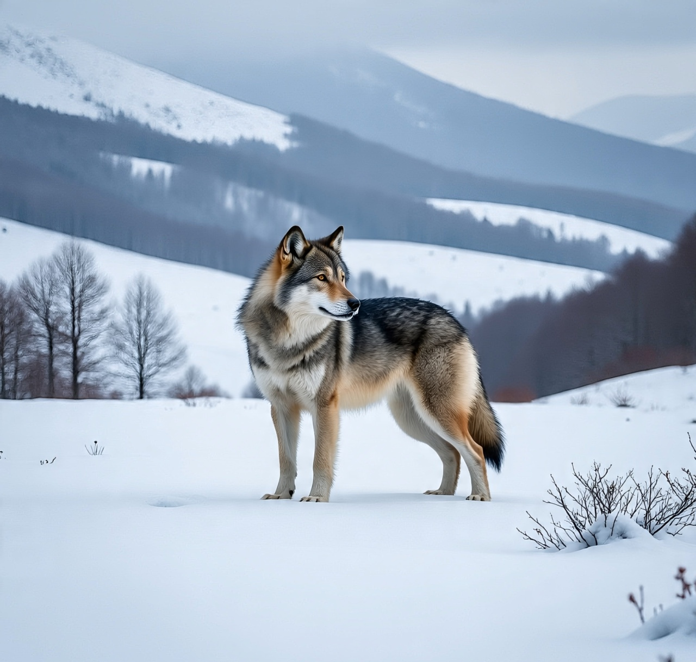
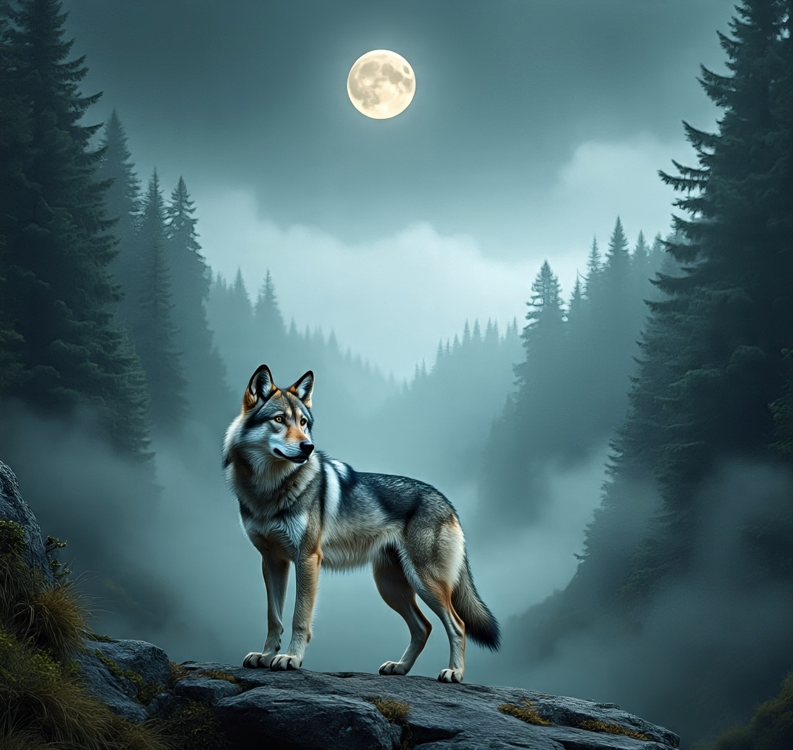
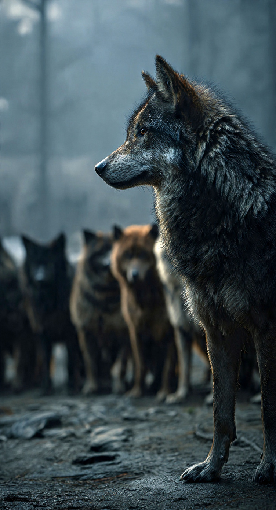
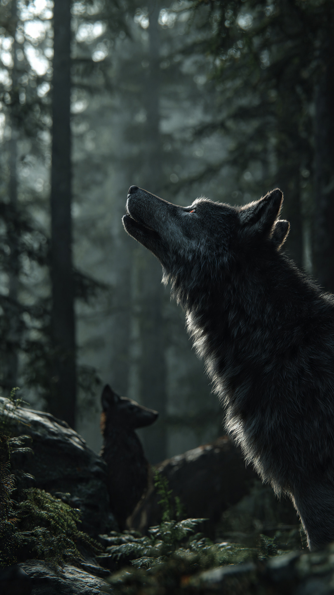

Chapter Three
The pains
Through the burning heat of the sun and the freezing cold of the winter the Lone was still standing strong in other to achieve his goals. When the storm will come in hard this lone never gave up he kept focused on the future that everything will be alright, he has to starve when he found nothing to hunt,he was also chased by other animals that are stronger than him fought with most and ran for his life.

He went deep in the wild and discovered a lot that he would not have discovered as member of a pack he has to swim through deadly waters,stump through muddy soil even has to pass through Sharp thorns but nevertheless did he give up. During this process he was actually building himself and his relation with other factors like the animals and plants in the wild,he knows what they would like and what the do not like.

Chapter Four
Don't call it a come back
After going through all those suffering, torment and training he finally achieved his goal he found a space, a very beautiful one where he settled down and called his own land he led all the animals that lived in it and became the head of that land. Ruled there for years and even won battles over his rivals, claim there land and became the head.

Now, he is to fight with the people in which his real families lived, he had no choice, they dumped him because they found no ability in him. So by the time he got to the land of his family they all thought he has come back to help them cause they were short of soldiers, but they were shocked when they saw the warriors of the people who slayed their soldiers with the Lone and they were frightened and wanted to help him but those were his guards so they reacted towards his family when they drawed closer to him. Then he stood them down and told his family they are my warriors so I will advise you to step down useless he takes them down. And left saying "Don't call this a come back "

.